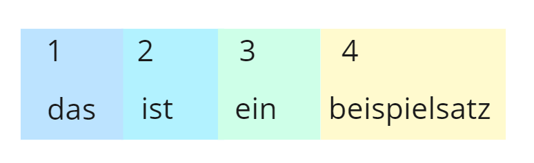
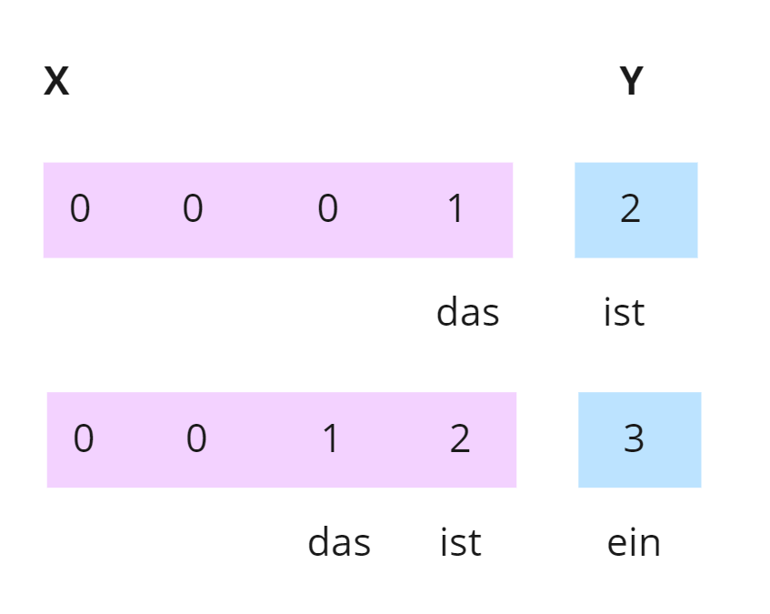

Die beiden Modelle wurden in Python trainiert und anschließened als json Datein für TensorFlowjs gespeichert. Als Trainingsdaten wurden die ersten XX Wörter aus dem Buch "The Adventures of Sherlock Holmes" von Sir Arthur Conan Doyle verwendet. Die Daten wurden mit dem Tokenizer von TensorFlowjs in ein Array aus Zahlen umgewandelt. Die Zahlen repräsentieren die einzelnen Wörter. Die Modelle wurden mit dem Framework TensorFlow Keras trainiert.
Verwendete Frameworks
Modell Training
- TensorFlow Keras
- TensorFlowjs
- Numpy
Web Applikation
Tokenizer
Nachdem die Wörter in Zahlen umgewandlet wurden wird der Text anhand seiner Zeilenumbrücken aufgeteilt. FÜr jede Zeile werden dann die aufeinanderfolgenden Wörter in ein Array geschrieben. Am Beispielsatz "Das ist ein Beispielsatz" würden die Arrays [Das, ist] [Das, ist, ein] [Das, ist, ein, Beispielsatz] entstehen. Anschließend bekommen die Arrays ein Padding, sodass alle Arrays die gleiche Länge haben.
input_sequences = []
for line in text.split('\n'):
token_list = tokenizer.texts_to_sequences([line])[0]
for i in range(1, len(token_list)):
n_gram_sequence = token_list[:i+1]
input_sequences.append(n_gram_sequence)
max_sequence_len = max([len(seq) for seq in input_sequences])
input_sequences = np.array(pad_sequences(input_sequences, maxlen=max_sequence_len, padding='pre'))
Gelernt wird dann, dass nach den Wörtern "Das ist" das Wort "ein" folgt und nach "Das ist ein" das Wort "Beispielsatz" folgt.
RNN Architektur
FFNN Architektur
Testen
Die Modelle werden getestet, indem gezählt wird, wie oft die richtige Vorhersage in den als nächstes vorhergesagten Wörtern vorkommt. Dabei hat der Benutzende die Möglichkeit die Anzahl der vorhergesagten Wörter zu bestimmen.